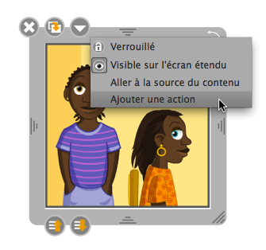

One can add hypermedia links to objects that contains fixed images or text.
A menu enables to add :
a link to a web page (requires an internet connection),
a link to another page of the presentation,
a link that enables to play a sound on a click on the object.
To add an action, select the option in the object frame menu. Click on « OK » to validate your action.
To remove the action, simply use the same menu again.
